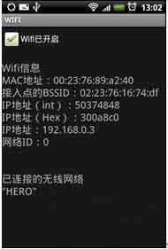

Android 大家常用的WIFI
WIFI的全称是Wireless Fidelity，又称802.11b标准，是一种高速的无线通信协议，传输速度可以达到11Mb/s。实际上，对WIFI并不需要过多的控制（当成功连接WIFI后，就可以直接通过IP在WIFI设备之间进行通信了），一般只需要控制打开或关闭WIFI以及获得一些与WIFI相关的信息（例如，MAC地址、IP等）。如果读者的Android手机有WIFI功能，可以在手机上测试本节的例子。要注意的是，WIFI功能不能在Android模拟器上测试，就算在有WIFI功能的真机上也需要先通过WIFI和计算机或其他WIFI设备连接后，才能获得与WIFI相关的信息。
本节的例子可以关闭和开始WIFI，并获得各种与WIFI相关的信息。首先确认手机通过WIFI与其他WIFI设备成功连接，然后运行本节的例子，会看到如图所示的输出信息。
效果图：

本例的完整实现代码如下：
import java.net.Inet4Address;import java.util.List;
import android.app.Activity;
import android.content.Context;
import android.net.wifi.WifiConfiguration;
import android.net.wifi.WifiInfo;
import android.net.wifi.WifiManager;
import android.os.Bundle;
import android.widget.CheckBox;
import android.widget.CompoundButton;
import android.widget.TextView;
import android.widget.CompoundButton.OnCheckedChangeListener;
public class Main extends Activity implements OnCheckedChangeListener {
private WifiManager wifiManager;
private WifiInfo wifiInfo;
private CheckBox chkOpenCloseWifiBox;
private List<WifiConfiguration> wifiConfigurations;
@Override
public void onCreate(Bundle savedInstanceState) {
super.onCreate(savedInstanceState);
setContentView(R.layout.main);
// 获得WifiManager对象
wifiManager = (WifiManager) getSystemService(Context.WIFI_SERVICE);
// 获得连接信息对象
wifiInfo = wifiManager.getConnectionInfo();
chkOpenCloseWifiBox = (CheckBox) findViewById(R.id.chkOpenCloseWifi);
TextView tvWifiConfigurations = (TextView) findViewById(R.id.tvWifiConfigurations);
TextView tvWifiInfo = (TextView) findViewById(R.id.tvWifiInfo);
chkOpenCloseWifiBox.setOnCheckedChangeListener(this);
// 根据当前WIFI的状态（是否被打开）设置复选框的选中状态
if (wifiManager.isWifiEnabled()) {
chkOpenCloseWifiBox.setText("Wifi已开启");
chkOpenCloseWifiBox.setChecked(true);
} else {
chkOpenCloseWifiBox.setText("Wifi已关闭");
chkOpenCloseWifiBox.setChecked(false);
}
// 获得WIFI信息
StringBuffer sb = new StringBuffer();
sb.append("Wifi信息\n");
sb.append("MAC地址：" + wifiInfo.getMacAddress() + "\n");
sb.append("接入点的BSSID：" + wifiInfo.getBSSID() + "\n");
sb.append("IP地址（int）：" + wifiInfo.getIpAddress() + "\n");
sb.append("IP地址（Hex）：" + Integer.toHexString(wifiInfo.getIpAddress())
+ "\n");
sb.append("IP地址：" + ipIntToString(wifiInfo.getIpAddress()) + "\n");
sb.append("网络ID：" + wifiInfo.getNetworkId() + "\n");
tvWifiInfo.setText(sb.toString());
// 得到配置好的网络
wifiConfigurations = wifiManager.getConfiguredNetworks();
tvWifiConfigurations.setText("已连接的无线网络\n");
for (WifiConfiguration wifiConfiguration : wifiConfigurations) {
tvWifiConfigurations.setText(tvWifiConfigurations.getText()
+ wifiConfiguration.SSID + "\n");
}
}
// 将int类型的IP转换成字符串形式的IP
private String ipIntToString(int ip) {
try {
byte[] bytes = new byte[4];
bytes[0] = (byte) (0xff & ip);
bytes[1] = (byte) ((0xff00 & ip) >> 8);
bytes[2] = (byte) ((0xff0000 & ip) >> 16);
bytes[3] = (byte) ((0xff000000 & ip) >> 24);
return Inet4Address.getByAddress(bytes).getHostAddress();
} catch (Exception e) {
return "";
}
}
@Override
public void onCheckedChanged(CompoundButton buttonView, boolean isChecked) {
// 当选中复选框时打开WIFI
if (isChecked) {
wifiManager.setWifiEnabled(true);
chkOpenCloseWifiBox.setText("Wifi已开启");
}
// 当取消复选框选中状态时关闭WIFI
else {
wifiManager.setWifiEnabled(false);
chkOpenCloseWifiBox.setText("Wifi已关闭");
}
}
}
在AndroidManifest.xml文件中要使用如下的代码打开相应的权限。
<uses-permission android:name="android.permission.ACCESS_WIFI_STATE"></uses-permission>
<uses-permission android:name="android.permission.WAKE_LOCK">
</uses-permission>
<uses-permission android:name="android.permission.CHANGE_WIFI_STATE">
</uses-permission>